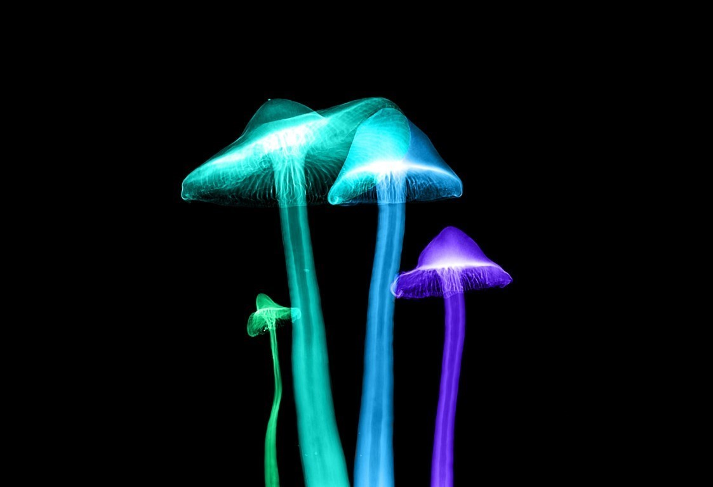

¿Sabías que los hongos del suelo son esenciales para mitigar el calentamiento global?
Un fascinante descubrimiento revela que los hongos del suelo podrían ser la clave para neutralizar las emisiones de CO2 y alcanzar el tan anhelado equilibrio de “cero neto”.
Según un estudio liderado por científicos de la Universidad de Sheffield, estos organismos almacenan hasta un tercio de las emisiones globales de CO2 provenientes de la quema de combustibles fósiles, lo que equivale a unas 13 gigatoneladas, superando las emisiones anuales de China.
Los hongos micorrícicos -aquellos que establecen relaciones simbióticas con las plantas- son los principales protagonistas de esta hazaña ecológica. No solo retienen el carbono bajo tierra, sino que su capacidad de captura es asombrosa y hasta ahora desconocida. Estos pequeños organismos fungales demuestran su papel crucial en la lucha contra el cambio climático.
Ante estos resultados impactantes, los investigadores hacen un llamado para que consideremos el valor de estos hongos en las políticas de conservación y protección de la biodiversidad, y alertan sobre la rápida degradación de los ecosistemas del suelo debido a la agricultura intensiva, el desarrollo urbano y otras industrias, y cómo esto socava nuestros esfuerzos por limitar el calentamiento global.
Es hora de reconocer la importancia de los hongos del suelo y su papel vital en la mitigación del cambio climático. Al proteger estos ecosistemas subterráneos, no solo aseguramos la estabilidad del clima, sino que también preservamos los fundamentos de los ecosistemas en los que confiamos para nuestra supervivencia. El llamado es claro: es momento de valorar y proteger a estos héroes ocultos que nos brindan una esperanza renovada en la lucha contra el cambio climático.